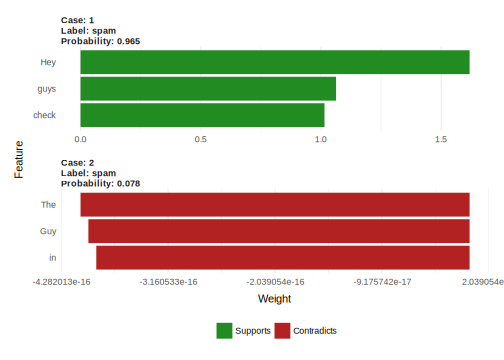

5.2 Local: Explain a single decisions
Instead of trying to explain predictions or mechanisms of the model globally, local methods focus on explaining single predictions.
5.2.1 Individual Conditional Expectation (ICE) plot
The partial dependence plot for visualizing the averaged effect of a feature is a global method, because it does not focus on the partial dependence of a specific instance, but on an average over all. The equivalent to a PDP for local expectations is called individiual conditional expectation (ICE) plot (Goldstein et al. 2015). An ICE plot visualizes the dependence of each instance’s predicted response on a feature. They are event simpler than PDPs, since no averaging is needed. Instead of drawing one line for a feature, each instance in the dataset gets it’s own line. The values for a line can be computed easily, by leaving all other features the same, but creating variants of the instance of interest and letting the black box make the predictions or classifications. The result is a set of points for a varying feature, for one specific instance. The lines for the instances can look quite differently (if the black box allows interactions between features), because the course of the line depends on the specific values of each instance. For drawing each line, the \(x_C\) are fixed for this one instance, and the \(x_C\) is varied on a grid and the \(\hat(y)\) calculated with \(\hat(f)\).
So, what do you gain by looking at individual expectations, instead of partial dependencies? This averaged display can obfuscate a heterogeneous relationship that comes from interactions. ICE plots solve this problem by plotting the relationship between feature and predicted response for individual observations. It can be seen as an extension to the standard PDP. PDP can show you how the average relationship between feature \(x_S\) and \(\hat(y)\) looks like. This works only well in cases where the interactions between \(x_S\) and the remaining \(x_C\) are weak. If there are interactions, a ICE plot will give a lot more insight.
A more formal definition: In ICE plots, for each observation in \(\{(x_{S_i}, x_{C_i})\}_{i=1}^N\) the curve \(\hat{f}_S^{(i)}\) is plotted against \(x_{S_i}\), while \(x_{C_i}\) is kept fixed. #### Example Let’s go back to the dataset about risk factors for cervical cancers and see how each instance’s prediction is associated with the feature ‘Age’. In the partial dependence plot chapter {(???)} we have seen that the probability increases around the age of 50, but does this hold true for each woman in the dataset? The ICE plot reveals that the most women’s predicted probability follows the average pattern of increase at 50, but there are a few exceptions: In a few cases, the prediction of cancer probability does not change much with the age, and that is for women that have a high predicted probability.
FIGURE 5.4: Individual conditional expectation plot of cervical cancer probability and age. Most women with a low cancer probability in younger years see an increase in predicted cancer probability, given all other feature values. Interestingly for a few women that have a high estimated cancer probability > 0.4, the estimated probability does not change much with higher age.
FIGURE 5.5: Individual conditional expectation plot of expected bike rentals and weather conditions . Same effects as in the partial dependence plot can be seen.
5.2.1.1 Centered ICE plot
There is one issue with the ICE plot: It can be hard to see if the individual conditionl expectations curve differ between individuals when they start at different $. An easy fix is to center the curves at a certain point in \(x_S\) and only display the difference in predited response. The resulting plot is called centered ICE plot (c-ICE). It is a kind of anchoring, and doing this at the lower end of \(x_S\) is a good choice. The new curves are defined as: \[\hat{f}_{cent}^{(i)} = \hat{f}_i - 1\hat{f}(x^{\text{*}}, x_{C_i}), \] where \(1\) is a vector of 1’s with the appropriate dimensions (usually one- or two-dimensional), and \(\hat{f}\) the fitted model.
5.2.1.2 Example
Taking Figure @ref{fig:ice-cervical} and centering the lines at the youngest observed age yields Figure @ref{fig:ice-cervical-centered}. It is easier to see now, how the relative change of the curves from the youngest age is. This can be useful when we are not interested in seing the absolute change of a predicted value, but rather the difference in prediction compared to a fixed point of the feature range.FIGURE 5.6: Centered ICE plot for predicted cervical cancer risk probability and age. Compared to age 18, the most predictions for most instances stay the same and see an increase up to +20%. A few cases show the opposite behaviour: The predicted probability decreases with increasing age.
FIGURE 5.7: Centered individual conditional expectation plot of expected bike rentals and weather conditions.
5.2.1.3 Derivative ICE plot
Another way to make it it visually easier to spot heterogenity is to look at the individual derivatives of \(\hat(f)\) with respect to \(\x_S\) instead of the predicted response \(\hat(f)\). The resulting plot is called derivative ICE plot (d-ICE). The derivatives of a function (or curve) tells you in which direction changes occur and if any occur at all. With the derivative ICE plot it is easy to spot value ranges in a feature where the black box’s predicted value changes for (at least some) instances. If there is no interaction between \(x_S\) and \(x_C\), then \(\hat{f}\) can be expressed as: \[\hat{f}(x) = \hat(f)(x_S, x_C) = g(x_S) + h(x_C), \text{ so that } \frac{\delta\hat{f}(x)}{\delta x_S} = g'(x_S)\] Without interactions, the individual partial derivatives should be the same for all observations. If they differ, it’s because of interactions and it will become visible in the d-ICE plot. In addition to displaying the individual curves for derivative \(\hat{f}\), showing the standard deviation of derivative \(\hat{f}\) helps to highlight regions in \(x_S\) with heterogeneity in the estimated derivatives.
(Goldstein et al. 2015)
5.2.1.4 Example
As we have seen, the most changes in estimated cancer probability happen around age 45. This is confirmed by the derivative ICE plot in Figure @ref{fig:ice-cervical-derivative}.FIGURE 5.8: Derivatice ICE plot of predicted cancer probability and age. Between age 14 and the early forties, a few instance see changes in prediction both upwards and downards, but the majorities derivatives are near zero. Between age 45 and 50, most women’s prediction curves have a positive derivative, indicating an increase in predicted cancer probability.
FIGURE 5.9: Derivative individual conditional expectation plot of expected bike rentals and weather conditions.
5.2.2 Local surrogate models (LIME)
Local interpretable model-agnostic explanations (LIME) is a method for fitting local, interpretable models that can explain single predictions or classifications of any black-box machine learning model. LIME explanations are local surrogate models. Instead of trying to fit a global surrogate model, LIME focuses on a prediction done by a black-box algorithm and explains it’s outcome.
The idea is quite simple, really. First of all, forget about the training data and imagine you only have the black box model where you can input data points and get the models outcome. You can probe the box as often as you want. Your goal is to understand why the machine learning model gave the outcome it produced. LIME tests out what happens to the model’s predictions when you put some variations of your data point of interest into the machine learning model. This basically generates a new dataset consisting of the perturbed samples and the associated model’s outcome. On this dataset LIME then trains a simple model weighted by the proximity of the sampled instances to the instance of interest. The simple mode can basically be any from Section [#simple], for example LASSO or a short tree. The learned model should be a good approximation of the machine learning model locally, but it does not have to be so globally. This kind of accuracy is also called local fidelity.
The recipe:
- Choose your instance of interest for which you want to have an explanation of it’s black box outcome
- Make some variations of the instances and check what the black box predicts in the neighbourhood of the instance of interest.
- Fit a local, interpretable model on the dataset with the variations
- Explain prediction by interpreting the local simple model.
In the current implementation, only LASSO can be chosen as a simple model. Upfront you have to choose K, the number of features that you want to have in your simple model. The lower the K, the simpler the model is to understand, higher K potentially creates models with higher fidelity. There are different methods for how to fit models with exactly K features. The most natural with LASSO is the lasso path. Starting from a model with a very high regularisation parameter \(\lambda\) yields a model with only the intercept. By refitting the LASSO models with slowly decreasing \(\lambda\) one after each other the features are getting weight estimates different from zero. When K features are in the model, you reached the desired number of features. Other strategies are forward or backward selection of features. This means you either start with the full model (=containing all features) or with a model with only the intercept and then testing which feature would create the biggest improvement when added or removed, until a model with K features are reached. Other simple models like decision trees are currently not implemented.
As always, the devil is in the details. In a high-dimensional space, defining a neighbourhood is not trivial. Distance measures are quite arbitrary and distances in different dimensions (aka features) might not be comparable at all. How big should the neighbourhood be you look into? If it is too small, then there might be no difference in the predictions of the machine learning model at all. The other question is: How do you get the variations of the data? This differs depending on the type of data, which can be either text, an image or tabular data. For text and image the solution is turning off and on single words or superpixels. In the case of tabular data LIME creates new samples by pertubing each feature individually, by drawing from a normal distribution with mean and standard deviation from the feature.
5.2.2.1 LIME for tabular data
Tabular data means any data that comes in tables, where each row represents an instance and each column a feature. Sampling is not done around the point, but from the training data’s mass center. Has it’s problems. But it increases the likelihood that the outcome for some of the sampled points predictions differ from the data point of interest and that LIME can learn at least some explanation.
Figure 5.10 explains how the sampling and local model fitting works.
![How LIME sampling works: A) The trainig data has two classes. The most data points have class 0, and the ones with class 1 are grouped in an upside-down V-shape. The plot displays the decision boundaries learned by a machine learning model. In this case it was a Random Forest, but it does not matter, because LIME is model-agnostic and we only care about the decision boundaries. B) The yellow is the instance of interest, for which an explanation is desired. The black dots are data sampled from a normal distribution around the means of the features in the training sample. This has only to be done once and can be reused for other explanations. C) Introducing locality by giving points near the instance of interest a higher weights. D) The colors and signs of the grid display the classifications of the locally learned model form the weighted samples. The white line marks the decision boundary (P(class) = 0.5) at which the classification changes.](xai-book_files/figure-html/lime-fitting-1.svg)
FIGURE 5.10: How LIME sampling works: A) The trainig data has two classes. The most data points have class 0, and the ones with class 1 are grouped in an upside-down V-shape. The plot displays the decision boundaries learned by a machine learning model. In this case it was a Random Forest, but it does not matter, because LIME is model-agnostic and we only care about the decision boundaries. B) The yellow is the instance of interest, for which an explanation is desired. The black dots are data sampled from a normal distribution around the means of the features in the training sample. This has only to be done once and can be reused for other explanations. C) Introducing locality by giving points near the instance of interest a higher weights. D) The colors and signs of the grid display the classifications of the locally learned model form the weighted samples. The white line marks the decision boundary (P(class) = 0.5) at which the classification changes.
5.2.2.1.1 Example
Let’s look at a concrete example. We go back to the bike rental and turn the prediction problem into a classification: After accounting for the trend that the bike rental get’s more popular over time we want to know on a given day if the number of rented bikes will be above or below the trend line. You can also interpret ‘above’ as being above the mean bike counts, but adjusted for the trend.
First we train a Random Forest on the classification task. Given seasonal and wheather information, on which day will the number of bike rentals be above the trend-free average? The Random Forest has 100 trees.![Explanations for two instances. The first instance got a probability of 0.13 for a match by the Random Forest. The correlation of interests between the participant and the partner is low which reduces the probability of a match for this participant. Also the importance for race of the partner is higher than 6, which lowers the probability of a match. In the second case, the probability for a match is quite high with 0.46. The reasons are the high correlation (>0.43) and that the partner is younger then 25.](xai-book_files/figure-html/lime-tabular-example-explain-plot-1-1.svg)
FIGURE 5.11: Explanations for two instances. The first instance got a probability of 0.13 for a match by the Random Forest. The correlation of interests between the participant and the partner is low which reduces the probability of a match for this participant. Also the importance for race of the partner is higher than 6, which lowers the probability of a match. In the second case, the probability for a match is quite high with 0.46. The reasons are the high correlation (>0.43) and that the partner is younger then 25.
The continuous features are categorised into bins by quantiles for the explanation models. The explanations are set to contain 3 features. Figure @ref{fig:lime-tabular-example-explain-plot-1} shows the results of the sparse local linear model that was fitted for two instances with different predicted classes. It becomes clear from the figure, that it is easier to interpret categorical features than continuous features. Figure @ref{fig:lime-tabular-example-explain-plot-2} shows a variant where the continuous features are turned into categorial features by putting them into bins along the quantiles.
FIGURE 5.12: Explanations for two instances. This time continuous features were turned into categorial features by binning them.
5.2.2.2 LIME for images
For images the sampling procedure works differently. Instead of sampling single pixels, LIME create variations of the image by turning off superpixel.
5.2.2.3 LIME for text
LIME for text works a bit differently than for tabular data. Variation of the point to be explained are created differently: Starting from the original text, new texts are created by randomly removing words from it.
5.2.2.3.1 Example
In this example we classify spam vs. ham of YouTube comments. The dataset is described in [#TubeSpam].
The black box model is a decision tree on the document word matrix. Each comment is one document (= one row) and each column is a the number of occurences of a specific word. A decision tree was trained on this data. As discussed in Section [#simple], decision trees are easy to understand, but in this case the tree is very deep. Also in the place of this tree there could have been a recurrent neural network or a support vector machine that was trained on the embeddings from word2vec. The machine learning model was trained on 80% of the approximately 2000 comments. From the remaining comments two were selected for showing the explanations.
Let’s look at tow comments of this dataset and the corresponding classes:
In the next step we create some variations of the datasets, which are used in a local model. For example some variations of one of the comments.
Each column corresponds to one word in the sentence. Each row is a variation. 1 indicates that the word is part of this variation. 0 indicates that the word was removed. The corresponding sentence for the first variation is “Guy in the yellow suit Jae-suk”.
 ##### Problems with LIME
- LIME does not work if the classification is very unbalanced (one class is very common) and the black box only predicts one class
- Defining the neighbourhood is tricky.
References
Goldstein, Alex, Adam Kapelner, Justin Bleich, and Emil Pitkin. 2015. “Peeking Inside the Black Box: Visualizing Statistical Learning with Plots of Individual Conditional Expectation.” Journal of Computational and Graphical Statistics 24 (1). Taylor & Francis: 44–65.